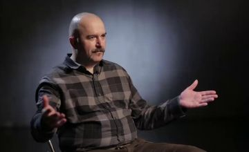

Кли́м Алекса́ндрович Жу́ков — российский видеоблогер, исторический реконструктор и публицист, а также писатель-фантаст. По образованию — историк-медиевист, выпускник исторического факультета СПбГУ. Эксперт по средневековому оружию XIV—XV веков.
Человеку, решившему связать биографию с наукой и культурой, непросто найти место работы. Но Жуков позаботился об этом, еще будучи аспирантом, и стал сотрудником отдела нумизматики в Эрмитаже. К 2004 году исследователь был сотрудником отдела истории оружия «Арсенал», а спустя год посвятил себя работе в проекте Museum-on-Line, организованном при музее. Параллельно Клим Жуков реализовался в педагогике. Он стал преподавателем Русского христианского института и читал лекции для студентов в секции Эрмитажа. 2008 год ознаменовался началом нового этапа в карьере исследователя. Он ушел из Эрмитажа и решил заняться литературной деятельностью. Внимание публициста привлекли организации, связанные с исторической реконструкцией. Они и принесли Жукову первую узнаваемость. Исследователь участвовал в научно-популярных проектах, стал руководителем клуба «Меченосец». Затем он возглавил и объединение под названием «Ливонский орден». Жуков быстро нашел себе применение в среде, связанной с его интересами. Он понял, как полученный опыт и знания применить на деле в условиях современности. Поэтому организовал клуб реконструкторов «Гран Компания» и стал членом ассоциации средневековых БИ. Активность амбициозного ученого не осталась без внимания не только на родине, но и за границей. Клим Жуков стал экспертом Гилдхоллской школы музыки и театра в Лондоне. На волне растущей популярности социальных сетей он попробовал себя в качестве блогера. Исследователь сотрудничает с Дмитрием Пучковым, а также создает материал для федерального проекта «История».
Как писатель Клим Жуков оказался плодотворным деятелем. С 2005 по 2008 годы ученый опубликовал 3 произведения, освещавшие особенности и модернизацию обмундирования и доспехов в Европе. Первый труд повествовал об эпохе Средневековья, второй посвящен Ренессансу, а третий рассказывает о кавалерии. В создании книг Жукову помогали соавторы. Статьи публициста также освещают тему военной археологии и посвящены исследованию доспехов. Заявив о себе в профессиональном сообществе работами вроде «Заморские панцири», Жуков обрел статус военного историка. В сотрудничестве с издательством «Астрель» он перевел книги американского ученого Джорджа Кэмерона Стоуна, специализирующегося на оружии 19–20 веков. Два произведения оказались на полках российских книжных магазинов в 2008-го и 2010-й. Расширяя границы собственного творчества, Жуков сменил направление с научной публицистики и увлекся фантастикой. С 2010 года он пишет произведения, совмещающие факты прошлого с вымыслом. Дебютным сочинением автора стала книга «Солдат императора». Роман открыл серию «Абсолютное оружие» в 2010-м. Вступив в сотворчество с писателем, скрывающимся под псевдонимом Александр Зорич, Жуков начал сотрудничать с авторами Яной Боцман и Дмитрим Гордевским. Вместе фантасты выпустили цикл книг, объединенных названием «Пилот». Действия в произведениях разворачиваются в той же вселенной, которая описана Гордевским в трилогии «Завтра будет война». Выпустив 4 произведения, создатели приостановили творческий процесс. Авторству Жукова также принадлежит серия «Антиквар», стартовавшая с аудиокниги «Опасные земли». Отдавшись литературному творчеству, связанному с фантастической направленностью, историк перестал уделять внимание профессиональной сфере. Он не издает исторические труды, но по-прежнему участвует в активностях, организованных реконструкторскими сообществами. В 2012 году и публицистическая деятельность автора приостановилась.
